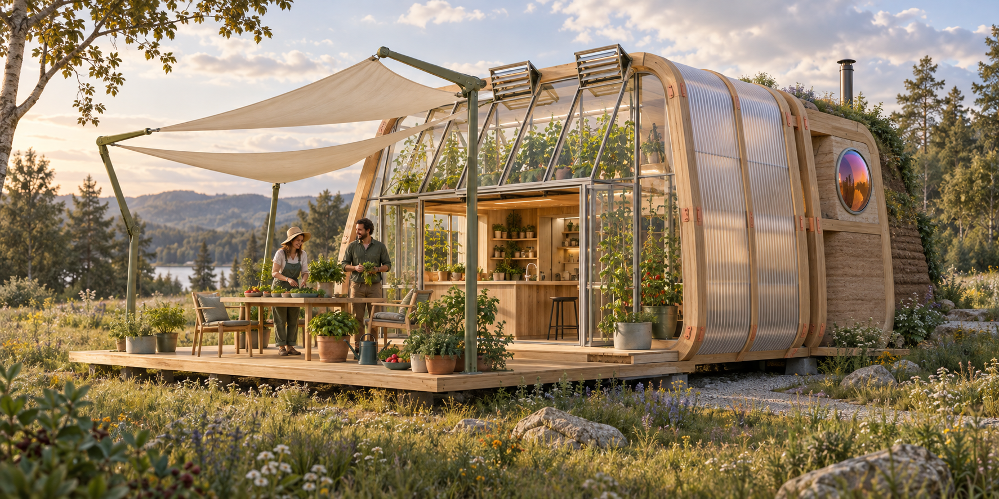

The cave had
a good run.
A new kind of home is taking shape.
A micro-farm. A connected living system. Precision-made, then made yours.
Meet the next habitat
Precision in the making.
Human in the living.
What if we designed a home the way we design a whole vehicle? Structure, energy, water, food, and intelligence conceived together from the start.
Then brought something beautifully human back into the process: the earth beneath your feet, the people beside you, and your own two hands.
Mezzocosm is exploring that future. Inspired by Earthship principles, with a manufacturing mindset and a very different way to make it yours.
A house.
A whole system.
Scroll to bring it together.
Or explore the parts below.
The interactive model is unavailable on this device. Explore each system using the buttons below.
Not construction documentation
Everything has a part to play.
Explore the pieces of a micro-farm designed to work as one. This assembly tells the concept story; the engineered design is still ahead.
Home is where
the outside is.
The sails tuck in when you’re away. Open them up, slide back the front, and the kitchen meets the deck. A little shelter can make a lot of room for living.
Sails extended. Shade for slow afternoons.
of mud.
And us.
Bring a friend.
Get your hands dirty.
A little of this place.
A little of you.
The manufactured frame arrives ready for the next chapter. Local soil is tested, the mix is worked out, and the rear wall becomes something you can help make.
Friends welcome. Mud very likely. We’re exploring a supported build experience that puts people back into the making of their home.
Prefer to leave it to the team? That belongs in the plan too. Participation is an invitation.
Local material, thermal mass, tactile character. The assembly and its performance will be developed and tested through the prototype.
A brain of its own.
A home that’s yours.
Intelligence should look after your home. Ownership should stay with you. These are principles we’re designing the first prototype around.
The intelligence layer
Sensor arrays and communicating systems, coordinated by a local AI brain. Designed to notice what’s happening and help the home respond.
Sense / Coordinate / AssistThe physical layer
Structure, insulation, passive design, and accessible manual control. The goal is a capable home that remains useful when the high-tech layer is unavailable.
Shelter / Buffer / EndureYour data stays home.Local processing. Data leaves only when you explicitly choose to share it.
You own the essentials.No subscription to keep the core functions of your home working.
You stay in charge.Technology that supports everyday life, without making your home dependent on it.
Your life grows.
Your home should too.
Removable side skins are intended to reveal connection points for future modules. A little more space, without starting over.
Illustrative future modules. Online configuration and ordering are part of the roadmap.
The next era
starts with
the first one.
We’re working toward the first Mezzocosm prototype. The ambition is big. The next step is tangible: resolve the design, build it, and learn from life inside it.
Help bring it into the world.
For investors and collaborators who see a different future for housing.
Let’s talk about the prototype I’d like to live in oneDesign development / Pre-prototype
We’re starting conversations, not taking orders.
What is being explored?
A connected timber dwelling with greenhouse growing, local-earth infill, insulation, kinetic shading, water collection, and solar energy. Sensor communication and possible wind generation remain open design questions. Dimensions, performance, price, and availability are not yet established.